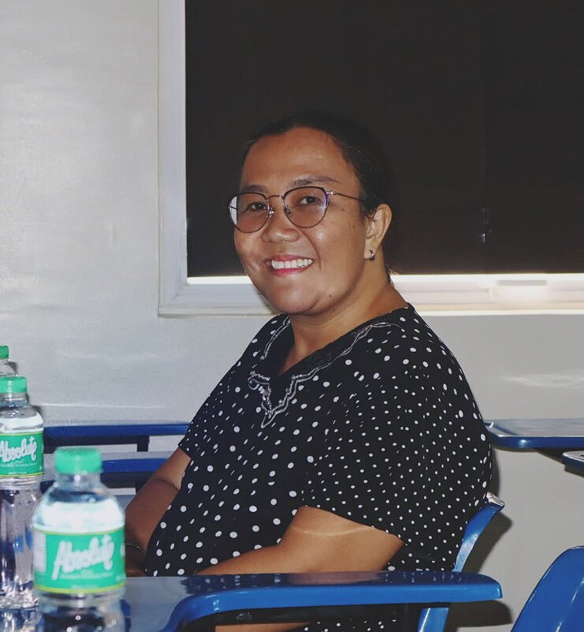
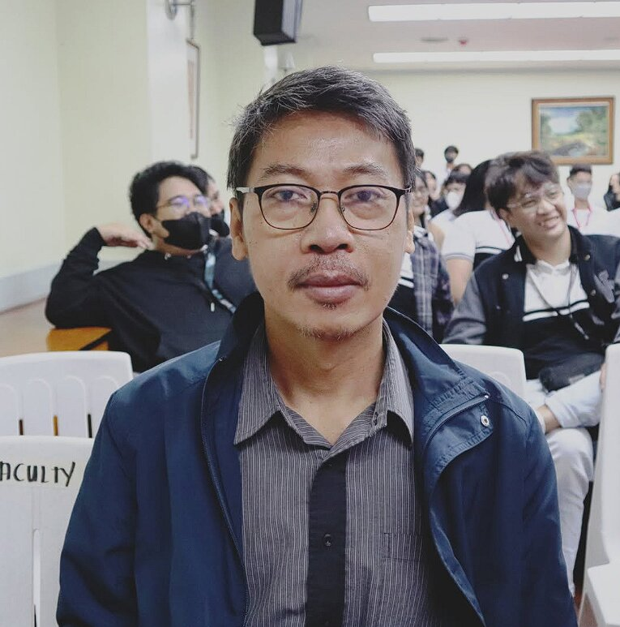
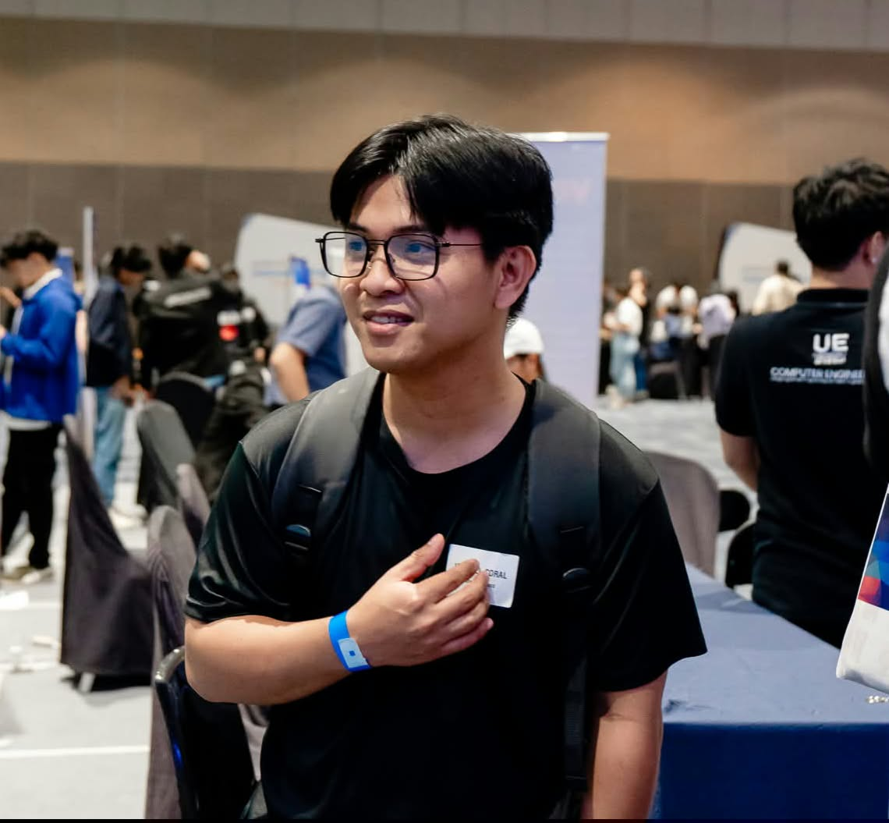

Representative faculty roles within the department — each combining classroom teaching with lab supervision and student mentorship.
Focus: Embedded Systems, Object-Oriented Programming & Software Design
Teaches core courses including Embedded Systems, Object-Oriented Programming, Data Structures, and Software Design Laboratory.

Focus: Programming Logic, Computer Architecture, Logic Circuits & Computer Networks with Cybersecurity
Specializes in teaching hardware logic, computer networks, cybersecurity and programming.

Focus: Electronics & PC Troubleshooting
Teaches electronics courses and mentors students in PC maintenance and troubleshooting.

Focus: Software Engineering & Microprocessor Specialist
Guides students through software design principles and full-stack arduino microprocessor development projects.
Many faculty members advise the Society of Computer Engineering Students.